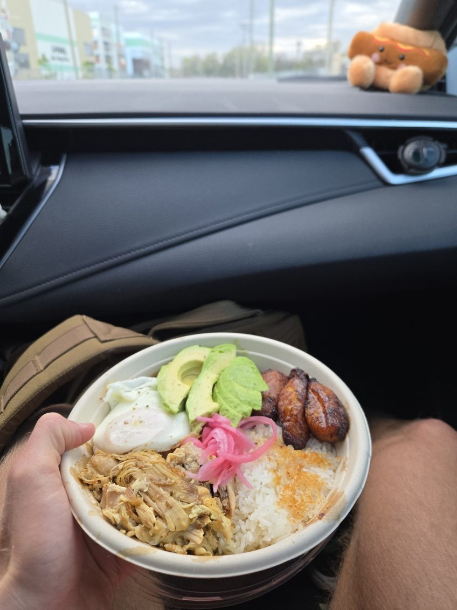

Healthy Meal Ideas
Welcome to Connor's Nutrition Guide! This page is designed to help you fuel your body with delicious and nutritious meals that support your fitness journey. Whether you're looking to build muscle, maintain energy, or simply eat healthier, these meal ideas are tailored to meet your goals. Each meal is carefully crafted with balanced macros to ensure you're getting the right mix of protein, carbs, and fats.
Explore a variety of options for breakfast, lunch, dinner, and even alternative desserts. These meals are not only packed with nutrients but are also easy to prepare, making them perfect for busy lifestyles. Let’s dive into some of Connor's top picks for optimal performance!
Breakfast
-
Sourdough toast with avocado and 4 scrambled eggs and 2 turkey sausage links with optional hot sauce.
Macros: 570 calories, 50g protein, 55g carbs, 16g fat
-
2 hard fried eggs, avocado, sweet potato hash, and 1/3 lbs. 90/10 ground beef.
Macros: 600 calories, 60g protein, 35g carbs, 20g fat
-
Ground turkey, 1 hard fried egg, sweet potato fries, baby carrots, asparagus, and provolone cheese.
Macros: 500 calories, 45g protein, 40g carbs, 15g fat
Lunch
-
Pulled chicken, avocado, dates, poached egg, and rice bowl topped with ginger
Macros: 750 calories, 35g protein, 65g carbs, 22g fat

-
Steak, rice, black bean bowl.
Macros: 625 calories, 50g protein, 40g carbs, 18g fat
-
2 turkey burgers with provolone cheese, black beans, and sweet corn topped with mojo sauce.
Macros: 700 calories, 55g protein, 50g carbs, 25g fat
Dinner
-
Shrimp with brocolli and a steamed vegetable mix consisting of carrots, peas, and rice.
Macros: 600 calories, 45g protein, 50g carbs, 20g fat
-
Ground turkey with sweet potato fries, brocolli, parmesan cheese, lettuce, and rice.
Macros: 650 calories, 55g protein, 50 carbs, 20g fat
-
Steak strips with corn, black beans, and sweet potato fries.
Macros: 400 calories, 40g protein, 30g carbs, 10g fat
Alternative Desserts
-
Greek yogurt with honey, oats, and frozen blueberries.
Macros: 300 calories, 15g protein, 12g carbs, 4g fat
-
Ninja smoothie made with protein powder and frozen bananas and strawberries
Macros: 200 calories, 12g protein, 10g carbs, 3g fat
-
Protein powder pancakes natural maple syrup and banana slices.
Macros: 400 calories, 25g protein, 50g carbs, 10g fat